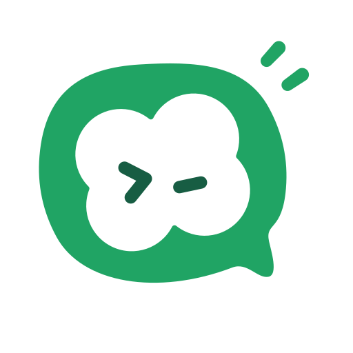
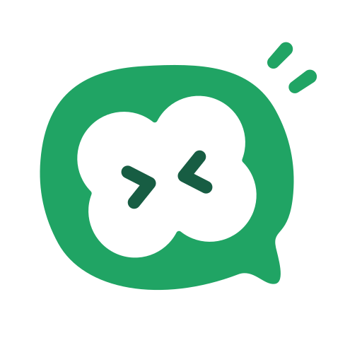
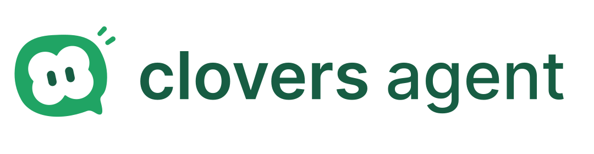
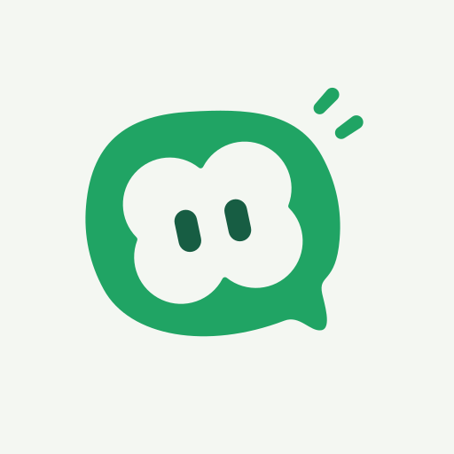
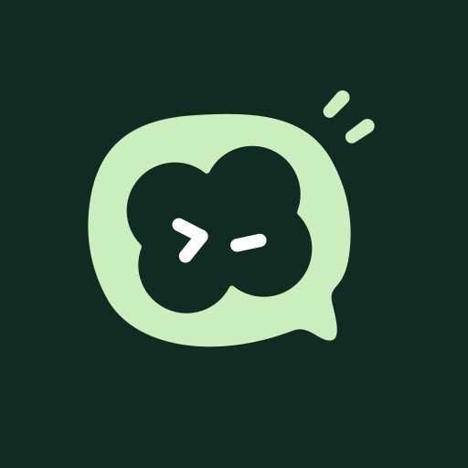
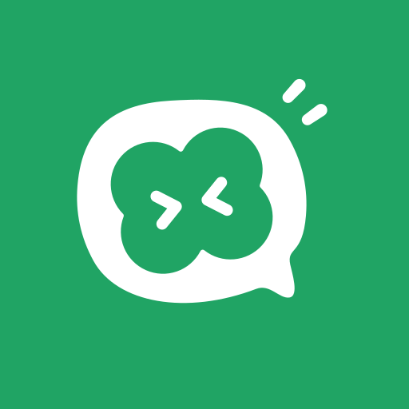
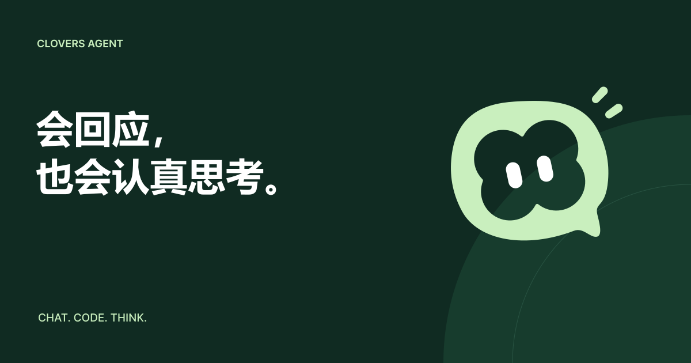

聊天气泡里，住着一片四叶草。从日常回应到专注 Coding，再到努力思考，每个状态都有自己的表情。
保留气泡、四叶草和提示线。眼睛传达状态，轮廓保持统一。
默认标识、日常对话、待命状态。

编写代码、执行任务、技术协作。

分析问题、规划步骤、努力思考。
前两色来自新版原稿。其余为配套场景扩展色。





正在认真推敲…
产品状态示意 · 用表情辅助文字反馈
6.4 秒循环 · 1.2 秒单次切换支持“减少动态效果”偏好。


规范、配色、动效时序和可再生成源文件，全部在包内。